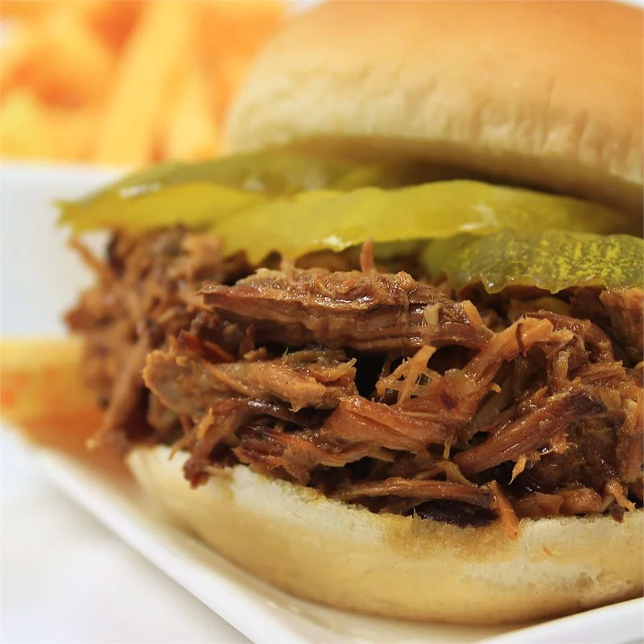

3 Ingredient Pulled Pork Barbeque

Description
Cooking the pork loin alone is too dry. Add country-style pork ribs in the slow cooker along with the pork loin to give it more moistness and flavor. Serve this pulled pork barbeque on top of a baked potato or on buns for a sandwich.
Ingridients
- 1 (18 ounce) bottle barbeque sauce
- 1 envelope dry onion soup mix
- 1 (4 pound) boneless pork loin roast
- 1 (4 pound) package thick country-style pork ribs
- 1 (18 ounce) bottle barbeque sauce
Steps
- Stir 1 bottle barbeque sauce and dry onion soup mix together in the bottom of a large slow cooker crock. Place pork loin and ribs into the slow cooker.
- Cook on High until the meat begins to fall apart, 6 to 8 hours. Remove meat and set aside. Allow crock to cool enough to handle; pour liquid into a bowl. Clean the crock and return it to the slow cooker.
- Debone ribs; discard bones and any fat. Shred meat from the ribs. Shred pork loin meat using two forks pulling them in opposite directions. Return all the shredded meat to the slow cooker. Pour 1 bottle barbeque sauce over the pork. Add a small amount of water to the sauce bottle, shake vigorously to get as much sauce from the bottle as possible, and pour into the slow cooker.
- Cook on Low for 1 hour